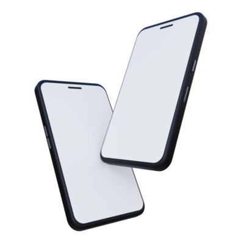
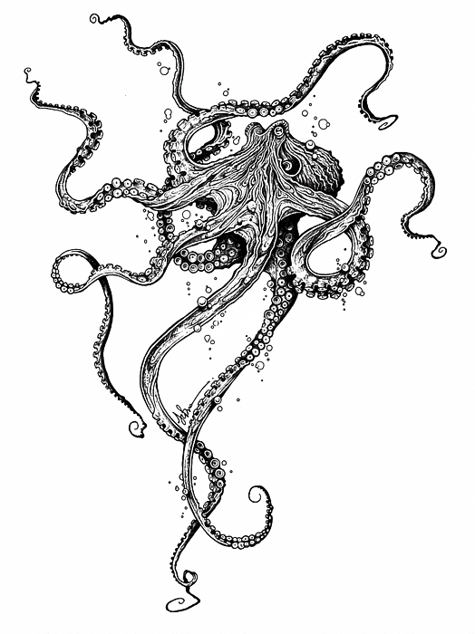

Инструкция по посещению Kraken
Платформа разработана с нуля и не основана на стандартных скриптах, что снижает вероятность утечки личных данных пользователей. Проектировкой занималась опытная команда специалистов, так что вы можете быть уверены в своей безопасности на сайте. Однако не стоит полностью доверяться высоким стандартам защиты платформы, поэтому рекомендуется использовать ссылки и методы, указанные на этой странице, для доступа к ней.

Вход с Tor Browser
Для безопасного использования даркнет сайтов рекумендуеться использовать защищённый браузер анонимайзер Tor Browser. Для этого установите и включите Tor на вашем устройстве и перейдите по onion ссылкеВход с VPN + Обычный браузер
Еще один способ получить доступ к Kraken — это воспользоваться VPN-сервисом, который также маскирует настоящий IP-адрес пользователя. Установите и включите VPN и через обычный браузер воспользуйтесь ссылкой ниже